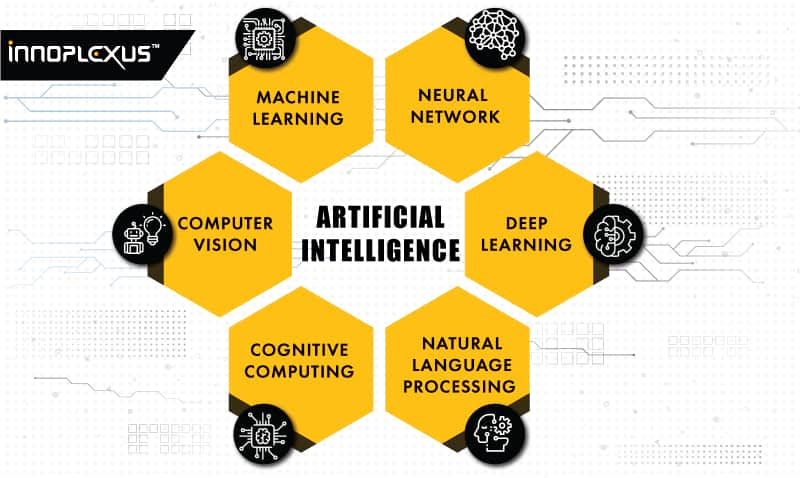
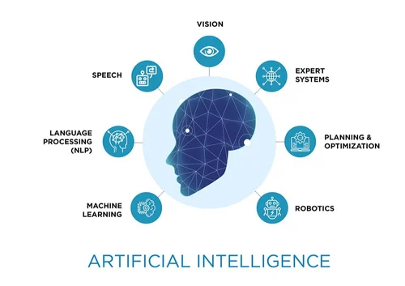
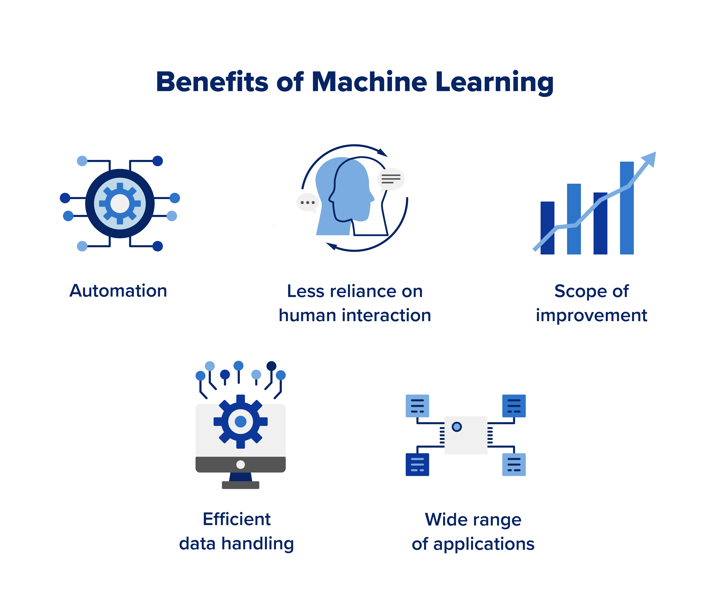

Different Technologies used in AI
AI encompasses a range of technologies, including machine learning for data-driven learning, deep learning for complex pattern recognition, natural language processing for language understanding, computer vision for visual interpretation, and robotics for physical interaction, among others. These technologies are collectively driving advancements in healthcare, finance, autonomous systems, and more, while ethical considerations and transparency become increasingly vital in shaping AI's future impact on society.
Machines can learn from experience, adapt to new inputs, and execute human-like jobs thanks to artificial intelligence (AI). Most AI examples you hear about today rely largely on deep learning and natural language processing, from chess-playing computers to self-driving automobiles. Computers may be trained to do certain jobs by analyzing massive volumes of data and identifying patterns in the data using these methods.
- Machine Learning
Machine Learning (ML) is a subfield of Artificial Intelligence (AI) that focuses on the development of algorithms and statistical models that enable computer systems to improve their performance on a specific task through learning from data, without being explicitly programmed. The core idea of machine learning is to use data to identify patterns, make predictions, or make decisions, often in situations where human programming would be impractical or too complex.
1. Training Data: Machine learning models are trained on a dataset containing input examples
(features) and their corresponding desired outcomes (labels or targets). This data is used to teach
the model how to make predictions or classifications.
2. Algorithms: ML algorithms are mathematical procedures that process the training data to learn
patterns and relationships. These algorithms can be categorized into various types, including
supervised learning, unsupervised learning, and reinforcement learning, each suited to different
tasks.
3. Features: Features are the characteristics or attributes of the data that are used as input to
the
machine learning model. Feature engineering involves selecting, transforming, or creating relevant
features to improve model performance.
4. Model Training: During training, the ML model adjusts its internal parameters based on the
training
data to minimize errors or discrepancies between its predictions and the actual outcomes. This
process continues iteratively until the model achieves acceptable performance.
5. Validation and Testing: After training, the model's performance is evaluated using separate
datasets
called validation and testing sets to ensure it can generalize well to unseen data and avoid
overfitting (performing well on training data but poorly on new data).
4. Supervised Learning: In supervised learning, models are trained on labeled data, where the
desired
outcomes are provided. This type of ML is used for tasks such as classification (e.g., spam
detection) and regression (e.g., predicting house prices).
5. Unsupervised Learning: Unsupervised learning deals with unlabeled data and seeks to discover
patterns, clusters, or hidden structures within the data. Examples include clustering and
dimensionality reduction techniques.
Machine learning has a wide range of practical applications, from healthcare and finance to natural language processing, recommendation systems, autonomous vehicles, and more.
It continues to advance, enabling innovative solutions to complex problems and driving the development of AI technologies.
- Deep Learning
Deep learning is a subset of machine learning that involves the use of artificial neural networks with multiple layers (deep neural networks) to model and extract complex patterns from data. These networks consist of interconnected nodes that mimic the neurons in the human brain, allowing them to learn hierarchical representations of information. Deep learning excels in tasks like image and speech recognition, natural language processing, and autonomous systems, and it has revolutionized fields such as computer vision and audio processing. Its remarkable ability to automatically discover intricate features in vast datasets has led to groundbreaking advancements in AI, but it typically requires large amounts of labeled data and substantial computational resources for training.
- natural Language Process
Natural Language Processing (NLP) is a field of artificial intelligence that enables computers to understand, interpret, and generate human language. It empowers machines to perform tasks like language translation, sentiment analysis, chatbot interactions, speech recognition, and text summarization, making it a fundamental technology for bridging the gap between human communication and computational systems. NLP leverages machine learning and deep learning techniques to extract meaning from text and speech data, with applications ranging from virtual assistants and automated customer support to content generation and language translation, profoundly impacting industries and enhancing human-computer interaction.
- Computer Vision

Computer vision is a field of artificial intelligence that focuses on enabling computers to interpret and understand visual information from the world, similar to the way humans perceive and analyze images and videos. It involves the development of algorithms and models that can extract meaningful insights and make decisions based on visual data. Computer vision is used in a wide range of applications, including image and video analysis, facial recognition, object detection, autonomous vehicles, medical image analysis, and industrial quality control. It relies on techniques such as image processing, machine learning, and deep learning to recognize patterns, objects, and features within visual data, making it a crucial technology for automating tasks that require visual understanding and interpretation.
- Genetic Algorithm
Genetic algorithms are computational methods inspired by natural selection that tackle complex optimization problems by iteratively evolving a population of potential solutions. They mimic the biological processes of selection, recombination, and mutation to iteratively improve solutions over generations, seeking optimal or near-optimal outcomes in problems where traditional mathematical or algorithmic approaches are impractical. Genetic algorithms are versatile and have been applied across various domains, such as engineering, finance, and artificial intelligence, making them a valuable tool for finding optimal solutions and addressing complex real-world challenges.
- Machine Vision
Machine vision, also known as computer vision, is a field of artificial intelligence that focuses on enabling computers to interpret and understand visual information from the world, much like human vision. It involves the development of algorithms and systems that can analyze images and videos to extract meaningful insights and make decisions based on visual data. Machine vision finds applications in various industries, including manufacturing, healthcare, robotics, and autonomous systems, where it's used for tasks such as quality control, object recognition, gesture analysis, and navigation. By harnessing techniques like image processing, pattern recognition, and deep learning, machine vision plays a critical role in automating visual tasks, improving efficiency, and enhancing the capabilities of machines and devices that require visual perception.